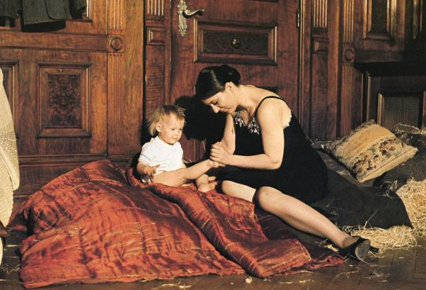

电影分享 · 01 / 13
德国，
苍白的母亲
战争结束了，为什么她的生活反而开始崩塌？
Helma Sanders-Brahms · 1980 · 从一位女儿的视角重写家庭史
建议在分享前用 Chrome 或 Safari 打开，按 F 全屏，并先测试音量。讲者备注适合排练时查看，正式播放时关闭。
片段与截图请从你合法获得的影片版本中截取，仅用于内部、非公开的评论与教学分享。Otto Dix 图像未内嵌；如自行加入，请确认具体作品的展示许可。